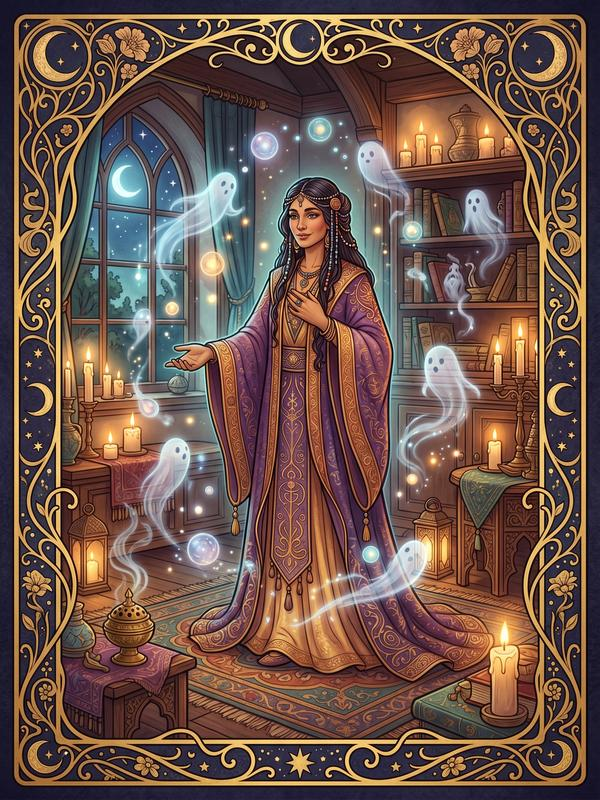

すべてに思い当たる必要はありません。まだ目覚めていない力も含めて——
それが、あなたという器の設計図です。

招霊の主
4つの軸とは？
見えない存在を排除せず、自分の日常に自然に招き入れる力。特別な儀式ではなく、丁寧な日常そのものが、霊的な結界になる。
長く同じ場所に在り続ける存在と相性が良い。あなたの丁寧な関わり方を、彼らは好む。
親しく招き入れるぶん、強い執着を持つ存在が居座りやすい。「来ていい存在」と「そうでない存在」を見極める目が必要になる。
あなたという人
あなたは、見えないものを「招き入れる」人だ。
怖がるでも、祓うでもなく——あなたはそこにいる存在を、自然に受け入れてしまう。気配を感じても逃げない。むしろ「どんな存在なんだろう」と興味が湧く。いつの間にか、見えない誰かと日常を共にしている。それがあなたの、普通の暮らしだ。
あなたには、自分なりの「作法」がある。お気に入りの場所への参拝、決まった時間の儀式、丁寧に扱うお守りや小物——それは信仰というより、見えない隣人への礼儀だ。あなたが丁寧に関わるから、向こうも丁寧に返してくる。
霊的なものを「友達」にできる人は、そう多くない。怖がる人、否定する人、利用しようとする人——そのどれでもなく、ただ「一緒にいる」ことができるのは、あなたの親和の気質があるからだ。見えない存在にとって、あなたは珍しく「安心できる人間」なのかもしれない。
少し、不思議な話をします。古来、神や精霊を日常に招き入れ、共に暮らしてきた人々がいました。家の神を祀り、土地の霊に語りかけ、見えないものと生活を共にしてきた者たち。特別な霊能者ではなく、ただ丁寧に、見えない世界と日常をつないだ人々。あなたは、その系譜にいる。
あなたの日常は、見えない存在にとっても居心地がいい。それはあなたが、境界を作らず、ただ「ここにいていい」と思えるからだ。あなたは、見えない隣人を招き入れる——招霊の主なのだ。
霊的日常の観測ログ
あなたには、思い当たることばかりのはずです。
あなたの強み
あなたの陰
深層相性マトリクス
魂が響き合う相手と、欠けを補い合う相手。
相性は優劣ではありません。補い合う相手こそ、最も多くを学べる鏡になることも。
詳しい関係性は『深淵の書』の二五六通り相性辞典で。
まだ語られていない、あなたの一面
あなたは見えない隣人と、すでに日常を共にしている。だが、こんな疑問が残ってはいないか。——招き入れた存在が、本当に「良い存在」かどうか、どう見極めるのか。作法を深めると、何が変わるのか。見えない隣人と共に生きてきた人たちは、その日常をどう守ってきたのか。その答えは、まだここには書かれていない。
——その扉の向こうにあるものが、書籍『深淵の書』です。
つなぐ力の理由を知り、消耗せず活かす道を。
まだ入口に立っただけだ。
あなたの中には、ここでは語り切れなかった記録が残っている。
なぜあなたはこうして生まれたのか。その力の本当の使い方。同じ魂を持つ歴史上の人物たち。そして——ここでは🔒で閉ざされた、招霊の主だけの処方箋のすべて。
あの人が、なぜあなたにあんな態度をとるのか——その霊的な理由も、ここに記されている。
いきなり読むのは迷う？ LINE登録で、招霊の主の深層を3日間かけてお届けします。
- 🔮 霊力スコア診断── あなたの霊能力を数値化する（当日・無料）
- 📖 深淵の書・試し読み── 「この力をひらいた先に叶える未来」の章を無料公開（翌日）

{kind=link}